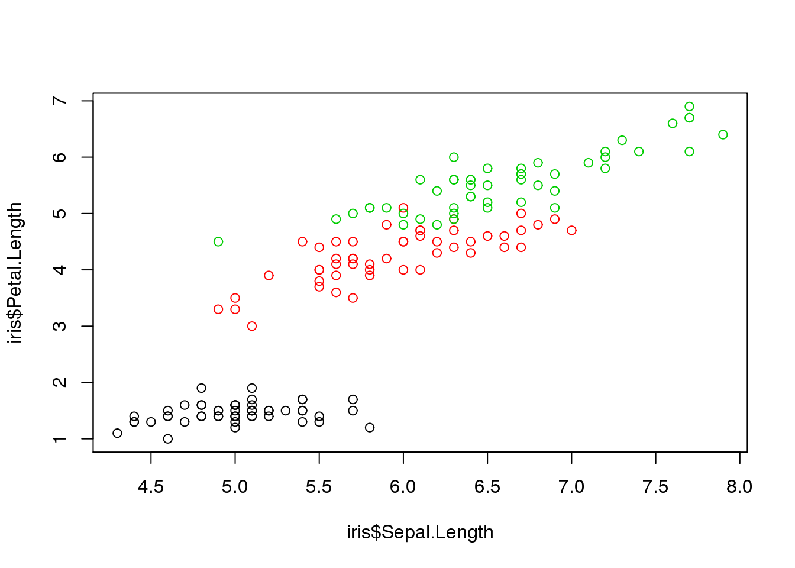

Chapter 17 What Oracle R Enterprise is
Oracle R Enterprise (ORE) is a collection of utilities that let you write and run R code in the database. Until recently this was an expensive option, but starting in 2020 no licensing is needed.
ORE consists of Oracle's own R distribution (which is lagging behind the official R version), an R library (also named ORE) which gives easy integration with database resources like tables and more, and some new PL/SQL functions that let you create, invoke and return the output from R functions.
I will try to give examples of two different ways of using ORE: 1. Using ORE from R, as a way to push statistical computations to the database 2. Calling R from SQL, enabling you to return an R dataframe from a SELECT statement, or simply creating a view that returns the result of an R function.
17.1 Loading ORE
We will take a shortcut here, and use the Oracle BigData Lite virtual machine. This allows us to skip a lot of installation and configuration, focusing on using the library.
Installing and loading ORE is simple and unsurprising:
#install.packages("ORE")
library(ORE)
ore.connect(user = "moviedemo", sid = "orcl", host = "localhost",
password = "welcome1", port = 1521, all=TRUE)## Warning: table "MOVIEDEMO"."CUSTOMER" contains unsupported data types## Warning: table "MOVIEDEMO"."PROSPECTS" contains unsupported data types## Warning: table "MOVIEDEMO"."CUSTOMER_RFM" contains unsupported data types## Warning: table "MOVIEDEMO"."IRIS_PREDICT" contains unsupported data typesThe arguments needed to connect to the database are mostly unsurprising, but it is worth noting that ORE can connect to both oracle and Hive (oracle is the default), and there is no default port number - which is why we needed to specify it with the port argument. The all=TRUE argument specifies to load a reference to all database objects. This is nice when your schema is relatively small, but comes at a performance cost if your schema is large.
After connecting, database tables and views should be directly accessible from R. You can test this by running
head(CUSTOMER_SEGMENT)## SEGMENT_ID NAME DESCRIPTION
## 1 1 Segment1 Young People - AGE <= 21
## 2 2 Segment2 "DINKS - Double Income No Kids - 21<AGE<40, Married, Household_size=2"
## 3 3 Segment3 "Married with Children - 21<AGE<40, Married, HHS>2"
## 4 4 Segment4 "Single Male - 21<AGE<40, Single, Male"
## 5 5 Segment5 "Single Female - 21<AGE<40, Single, Female"
## 6 6 Segment6 "Midage Male - 40<=AGE<55, Male"CUSTOMER_SEGMENT is a table in the moviedemo scema that we connected with.
17.2 Pushing R computation to the database
17.3 ORE build-in algorithms
ORE comes with a number of different machine-learning algorithms (although nothing fancy). You will probably struggle to find anything ORE can do that R can't, but the library pushes computation to the database - which can give a performance improvement.
One such algorithm is KMeans, which assigns each observation to a cluster. A common example is customer segmentation. You have a number of customers, and you may have some basic information about them like their age, gender, location, and purchasing history. Now, you want to send an email to each, advertising newly arrived products. A modern data scientist may see a supervised machine learning model as a solution, but a less technical way of doing this is to create assign each customer to a group, figure out some commonalities in each group, and send each group an email focusing on some of the
To illustrate the intuitive usefulness of clustering, take a look at how the iris dataset is distributed:
plot(iris$Sepal.Length, iris$Petal.Length, col=iris$Species)
The color coding represents species, and it is obvious that plants of the same species tend to have similar lengths for sepals and petals.
For the sake of variation, we will demonstrate OREs K-means implementation using the CUSTOMER_V table.
head(CUSTOMER_V)## Warning: ORE object has no unique key - using random order
## Warning: ORE object has no unique key - using random order## CUST_ID LAST_NAME FIRST_NAME STREET_ADDRESS POSTAL_CODE CITY_ID CITY STATE_PROVINCE_ID STATE_PROVINCE COUNTRY_ID
## 1 1e+07 Re**** Laurel 61 LONDON ROAD PO8 8 52033 COWPLAIN 1113 <NA> 129
## 2 1e+07 Su**** Otto <NA> <NA> 49239 Kitanoshita 1112 Tokyo 128
## 3 1e+07 Kl******** Ta-Heng FAIRFAX STREET CV1 5 55742 COVENTRY 1113 <NA> 129
## 4 1e+07 Ro**** Bhadrabuja 27 DUNDERG ROAD BT51 4 37386 MACOSQUIN 1113 <NA> 129
## 5 1e+07 Ly***** Candrin 1 COMMERCIAL ROAD EX7 9 110601 DAWLISH 1113 <NA> 129
## 6 1e+07 Sr****** Motilal 12 ANTONY ROAD PL11 2 89177 TORPOINT 1113 <NA> 129
## COUNTRY CONTINENT_ID CONTINENT AGE COMMUTE_DISTANCE CREDIT_BALANCE EDUCATION EMAIL FULL_TIME GENDER
## 1 United Kingdom 14 Europe 30 1 21 Bachelors Laurel.Recker@oraclemail.com Yes Male
## 2 Japan 16 Asia 27 40 206 Masters Otto.Suzuki@oraclemail.com Yes Male
## 3 United Kingdom 14 Europe 44 6 136 High School Ta-Heng.Klossovsky@oraclemail.com Yes Male
## 4 United Kingdom 14 Europe 65 18 66 Bachelors Bhadrabuja.Rovigo@oraclemail.com Yes Male
## 5 United Kingdom 14 Europe 49 21 36 Bachelors Candrin.Lyakhov@oraclemail.com Yes Male
## 6 United Kingdom 14 Europe 50 16 165 Bachelors Motilal.Sreedhar@oraclemail.com Yes Male
## HOUSEHOLD_SIZE INCOME INCOME_LEVEL INSUFF_FUNDS_INCIDENTS JOB_TYPE LATE_MORT_RENT_PMTS MARITAL_STATUS MORTGAGE_AMT NUM_CARS
## 1 1 108625 E: 90,000 - 109,999 0 Services 0 S 190000 1
## 2 1 93770 E: 90,000 - 109,999 1 Professional 1 S 0 1
## 3 1 11851 A: Below 30,000 1 Business 1 S 140000 1
## 4 2 54651 C: 50,000 - 69,999 1 Business 0 M 6202 2
## 5 2 118261 F: 110,000 - 129,999 0 Business 0 M 10000 1
## 6 1 116367 F: 110,000 - 129,999 0 Business 0 S 0 1
## NUM_MORTGAGES PET PROMOTION_RESPONSE RENT_OWN SEG WORK_EXPERIENCE YRS_CURRENT_EMPLOYER YRS_CUSTOMER YRS_RESIDENCE COUNTRY_CODE
## 1 1 Dog 0 Own 4 2 2 4 5 GB
## 2 0 Unknown 0 Rent 4 8 2 5 2 JP
## 3 1 Unknown 0 Own 6 18 3 4 16 GB
## 4 1 Dog 0 Own 8 28 20 2 2 GB
## 5 1 Unknown 0 Own 6 25 4 1 1 GB
## 6 0 Unknown 0 Rent 6 28 6 1 1 GBfeature_list <- c("INCOME", "MORTGAGE_AMT", "NUM_CARS", "NUM_MORTGAGES", "WORK_EXPERIENCE",
"YRS_CURRENT_EMPLOYER", "YRS_CUSTOMER", "YRS_RESIDENCE", "LATE_MORT_RENT_PMTS",
"INSUFF_FUNDS_INCIDENTS")
kmmodel <- ore.odmKMeans(~., CUSTOMER_V[, feature_list] , num.centers=3, iterations = 10)The ore.odmKMeans function takes the formula as the first argument and dataset as the second argument, followed by the desired number of clusters (3) and the number of iterations the algorithm should do (10).
The resulting model can be used to associate new observations with existing clusters, or we can simply take a note of the cluster centers available as a dataframe in kmmodel$clusters.
17.4 Calling R from SQL
Oracle reuses the concept of scripts when interacting with R from SQL, allowing you to register a "script" that is basically an R function that takes input and returns output like any other function. The challenge and potential for confusion lies in mapping this input and output between SQL and R.
In our example, we return to the iris dataset (yawn), and create a prediction model that we can access from SQL and even represent as a view for convenience.
In order for this to be a workable end-to-end example, we have to start with a little data preparation, including writing the iris dataset to the DB. If you haven't already, remember to connect to the database using the ore.connect function.
# making iris visible, and DB-izing variable names
iris_to_db <- iris
names(iris_to_db) <- c("SEPAL_LENGTH", "SEPAL_WIDTH", "PETAL_LENGTH", "PETAL_WIDTH", "SPECIES")
if (ore.exists("IRIS_RC")) {
ore.drop("IRIS_RC")
}
ore.create(iris_to_db, table="IRIS_RC")OK, so we have renamed some column names for convenience, and created a table IRIS_R in the DB. I might not have shown the ore.create function before, but it does what it suggest - it creates a table in the db. Other than that one command though, we are not seeing anything new so far. That is about to change.
Our ultimate goal is to be able to call on a prediction model from Oracle, but in order to do that we need a place to store the model - a place Oracle can access. Oracle has created such an "object storage" for R, and we can save objects there through the ore.save command. Let's try creating the model we want and saving it.
iris_species_model <- ore.odmNB(SPECIES ~ SEPAL_WIDTH + PETAL_LENGTH + PETAL_WIDTH + SEPAL_LENGTH, IRIS_RC)
ore.save(iris_species_model, name='supervised_models', list='iris_species_model', overwrite = TRUE)The name argument specifies the environment we want to save the model to - you can basically think of it as a folder, and the list argument is a list (ahem vector ahem) of the names you want to assign. If you are saving multiple elements, you can pass multiple objects before the named arguments. Make sure the number of objects and length of the list matches, and make sure the order is correct.
We have now created an R model and assigned it to the R-variable iris_species_model, as one typically does in R. Next, we saved this model to Oracle, using the name iris_species_model. In summary, we now have the same model, with the same name, both in R and in Oracle. The difference is that the model in Oracle is persistent, while the model in R disappears when you shut down R (granted R does a good job at saving the R environment for you, but you get the point).
Now, we are halfway - but this is the most difficult part: We need to register a script (function) that gives us the predictions from SQL.
We haven't talked about the details of what we want yet - what exactly is the output we want, and what is the input the model needs? There are many ways to skin this cat and our chosen approach might not be the most efficient one, but it shows some of the hoops you need to jump through. We are passing the function an entire dataframe, together with a reference to the model we are using. The function returns a dataframe with the predictions.
iris_species_predict <- function(dat, ds, obj) {
ore.load(name=ds, list=obj)
mod <- get(obj)
dat <- ore.frame(dat)
prd <- predict(mod, dat,supplemental.cols="SPECIES")
ore.pull(prd)
}Our function has to work within some constraints.
The dataset that is being passed has to originate from a table in the database, and we use
ore.frameto convert the input dataset to a "proper" dataframe that R can work with.In order to load the model we saved (named
iris_species_model), we need a reference both to the environment in which the model is stored and the name of the model. theore.load. Theore.loadcommand largely mirrors the nativeloadcommand.
Once this is done, we can use the model we loaded to predict the species we want, and return it as a dataframe.
So far so good. It's an R function, there is a little bit of legwork involved in loading the model and handling the incoming data from SQL, but mostly it is recognizible. And we can save this function to Oracle as a script.
ore.scriptCreate('iris_species_predict', iris_species_predict, overwrite = TRUE)To recap, we have: 1. Trained a model that predicts iris species. 2. Saved that model to Oracle, so that it is accessible to our moviedemo database user and can be loaded any time. 3. Created a function that uses the model to predict species given an incoming dataset 4. registered this function as a script in Oracle.
We have now done what we can in R, the next step is to bring this together from SQL.
In SQL, we can call this script using the rqTableEval function. The input to this function is fairly involved, not to mention unintuitive. We ha
SELECT * FROM table(rqTableEval(
cursor(SELECT * FROM IRIS_RC),
cursor(SELECT 'supervised_models' as "ds", 'iris_species_model' as "obj", 1 as "ore.connect" FROM dual),
'SELECT 1 AS SETOSA_PROB, 1 AS VERSICOLOR_PROB, 1 AS VIRGINICA_PROB, CAST(''a'' AS VARCHAR(255)) AS SPECIES, CAST(''b'' AS VARCHAR(255)) AS PREDICTED_SPECIES FROM dual',
'iris_species_predict')
)
WHERE species!=predicted_species| SETOSA_PROB | VERSICOLOR_PROB | VIRGINICA_PROB | SPECIES | PREDICTED_SPECIES |
|---|---|---|---|---|
| 0 | 0.24 | 0.76 | versicolor | virginica |
| 0 | 0.00 | 1.00 | versicolor | virginica |
| 0 | 0.44 | 0.56 | versicolor | virginica |
| 0 | 0.44 | 0.56 | versicolor | virginica |
| 0 | 0.24 | 0.76 | versicolor | virginica |
| 0 | 1.00 | 0.00 | virginica | versicolor |
| 0 | 0.84 | 0.16 | virginica | versicolor |
| 0 | 0.84 | 0.16 | virginica | versicolor |
We are constructing a table (as indicating by the table function that wraps it all), inside it is the rqTableEval function that takes three arguments (not the same three as the R function, mind you...). In order, the inputs are:
The input dataset, in the form of a SELECT statement from the
IRIS_Rtable we created. If we cared about the model itself we would hav split the data into a train and test set, but we are simply showing the technical bits for now. All wrapped in a cursor.The additional arguments,
dsandobj, in the form of simple strings selected from dual. Again, inside a cursor.A mock SELECT statement indicating the column types of the return dataset, formatted as a long string. This is unintuitive at best and it seems weird that Oracle can talk to R about everything except the structure of the returning data frame, but apparently that is where we are at. In detail we are expecting one numerical column with a probability for each of the species, so we select 1 (as a stand-in for a number) and name it for each of the three species. We also expect two columns, the actual and predicted species, as text columns. For text we need to make sure the column is big enough, so we select some letter and explicitly cast it as
VARCHAR(255)which we know will be more than enough for the species name.
This query can now be run, and you should get in return the same dataset you get when you call predict directly in R.
Congratulations. Save for the illegible syntax, you have now seamlessly combined R and SQL.